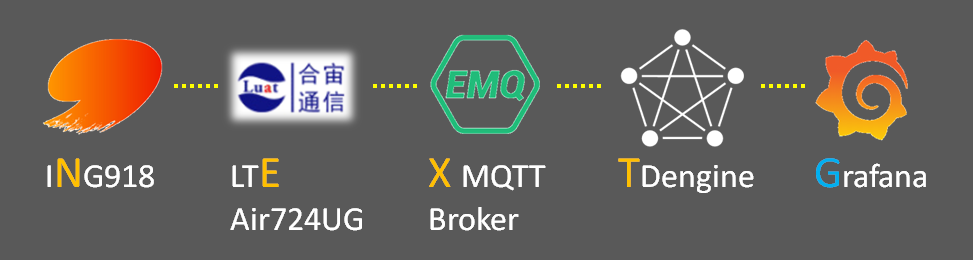

本文介绍如何采集海量蓝牙温度计的数据，通过 LTE 上传到服务器，并对数据进行可视化呈现。
我们把这套系统称为“NEXT-G”，除了其中的“G”为“洋货”外，“NEXT”皆为国货精品。

NEXT-G 系统简介
-
ING918
低功耗蓝牙 SoC。
-
4G 全网通，支持 FDD/TDD/LTE CAT-1，基于紫光展锐 UIS8910 平台。
-
EMQ X 是基于高并发的 Erlang/OTP 语言平台开发，支持百万级连接和分布式集群架构，发布订阅模式的开源 MQTT 消息服务器。 本文使用开源版 EMQ X Broker。
-
TDengine 是涛思数据专为物联网、车联网、工业互联网、IT 运维等设计和优化的时间序列数据库。
-
Grafana 是一个跨平台、开源的度量分析和可视化工具，可以查询处理各类数据源中的数据，进行可视化的展示。
XT-G 的安装
XT-G 的安装及入门请参考 EMQ 的博客 《EMQ X+TDengine 搭建 MQTT 物联网可视化平台》。
XT-G 的配置
-
TDengine 数据库设计
用一个超级表保存温度和时间戳，每个温度计一张子表。 通过以下命令创建
test数据库和thermo_data超级表，dev_id为字符串型的 TAG。create database test; use test; create table thermo_data ( ts timestamp, temperature float ) TAGS ( dev_id NCHAR(20) ); -
根据实际情况配置防火墙
开放以下 MQTT 服务器相关端口：
- 1883 端口，TCP，MQTT 服务器
如果需要从外部访问，需要开放以下 TCP 端口：
- 18083 端口，用于 EMQ X Web 管理
- 3000 端口，用于 Grafana Web 管理
-
配置 MQTT Broker
-
启动下列插件
- emqx_auth_clientid 或其它鉴权插件
- emqx_web_hook
-
添加 MQTT 账户、资源
-
添加规则
利用规则将温度数据写入数据库，由于表名称里禁止出现某些特殊字符，故以
dev_id的 MD5 为子表名 （注：表名的第一个字符不能为数字）。SQL 代码：
SELECT payload.temperature as t, payload.dev_id as dev_id, 'a' + md5(payload.dev_id) as tname FROM "thermo/data/#"Payload Template：
INSERT INTO test.${tname} using test.thermo_data tags ("${dev_id}") VALUES ( now, ${t} );
-
-
创建 Grafana 看板
下面是几个仪表盘 SQL 示例。
- 列出所有温度计的设备 ID
select dev_id from test.thermo_data- 某温度计的最新数据
select last (*) from test.thermo_data where dev_id = "..."- 某温度计的数据曲线
select avg(temperature) from test.thermo_data where dev_id = "..." and ts >= $from and ts < $to interval($interval)
蓝牙部分的开发
温度计
设计思路：周期性从关机状态中醒来，广播若干次温度数据后，再关机，周而复始；采用 5.0 扩展广播，采集端利用其中的 DID 数据域可 方便地实现数据去重，防止 LTE 流量浪费。
温度数据以下列格式放到 «Manufacturer Specific Data» 里发送：
#pragma pack (push, 1)
typedef struct thermo_beacon_adv
{
uint16_t company_id;
uint16_t id;
uint8_t type;
uint32_t temperature;
} thermo_beacon_adv_t;
#pragma pack (pop)
参考 SDK 中自带的温度计示例可以方便地完成这部分的开发。
采集端
采集端通过 UART 接口控制 Air724UG 模组，利用其提供的 MQTT AT 指令连接到 MQTT Broker服务嚣。
采集端解析扫描到的温度计广播，将温度数据以 JSON 形式发布到 thermo/data 主题。
MQTT 服务模块
把 Air724UG 模组的驱动封装成 MQTT 服务模块。考虑到连接过程需要多个步骤，可以设计成一个 FSM，例如:
struct mqtt_fsm;
typedef void (* f_state)(struct mqtt_fsm *fsm);
typedef struct mqtt_fsm
{
const char *server;
const char *port;
const char *client_id;
const char *user;
const char *password;
int buf_wr;
char buffer[MQTT_DRIVER_BUF_SIZE];
mqtt_msg_t *first_msg;
mqtt_msg_t *last_msg;
f_state state;
} mqtt_fsm_t;
其主题发布接口为：
int mqtt_publish(const char *topic, const void *data, int data_size);
温度扫描与上报
扫描到 thermo_beacon_adv_t 数据后，转换成 JSON 形式发布到 thermo/data 主题，核心代码如下：
#define TOPIC "thermo/data"
...
switch (hci_event_le_meta_get_subevent_code(packet))
{
case HCI_SUBEVENT_LE_EXTENDED_ADVERTISING_REPORT:
{
uint16_t length;
const thermo_beacon_adv_t *p_beacon;
const char *data;
const le_ext_adv_report_t *report = decode_hci_le_meta_event(packet,
le_meta_event_ext_adv_report_t)->reports;
p_beacon = (const thermo_beacon_adv_t *)ad_data_from_type(report->data_len,
(uint8_t *)report->data, 0xff, &length);
if ((length != sizeof(thermo_beacon_adv_t))
|| (p_beacon->company_id != INGCHIPS_ID)
|| (p_beacon->id != THERMO_SENSOR))
break;
data = format_json(report, p_beacon);
mqtt_publish(TOPIC, data, strlen(data));
}
break;
default:
break;
}
format_json 函数的实现如下：
const char *format_json(const le_ext_adv_report_t *report, const thermo_beacon_adv_t *p_beacon)
{
static char str[100];
sprintf(str, "{\"dev_id\": \"%02X:%02X:%02X:%02X:%02X:%02X\","
"\"temperature\": %s}",
report->address[5], report->address[4], report->address[3], report->address[2], report->address[1], report->address[0],
float_ieee_11073_val_to_repr(p_beacon->temperature));
return str;
}
float_ieee_11073_val_to_repr 函数的定义可在 SDK “Smart Meter” 示例中找到。
结论
-
BLE 能够打通物联网的最后 100 米，与 LTE Cat. 1 配合组成很好（高速、低成本）的物联网数据传输方案；
-
ING918 系列芯片开放、开发便捷，可广泛用于各种物联网应用。